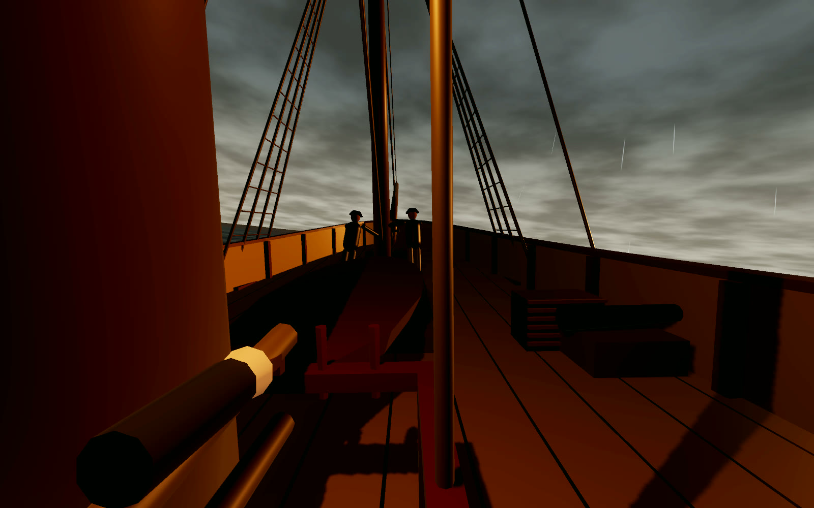
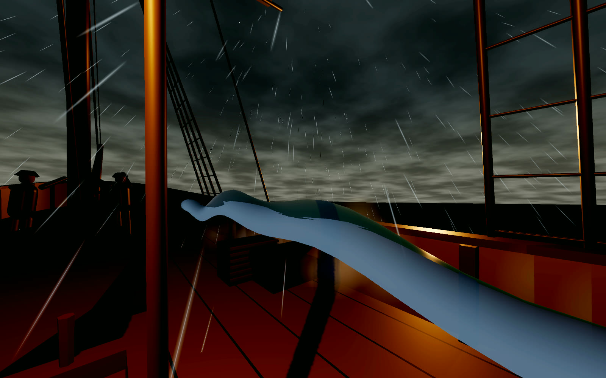
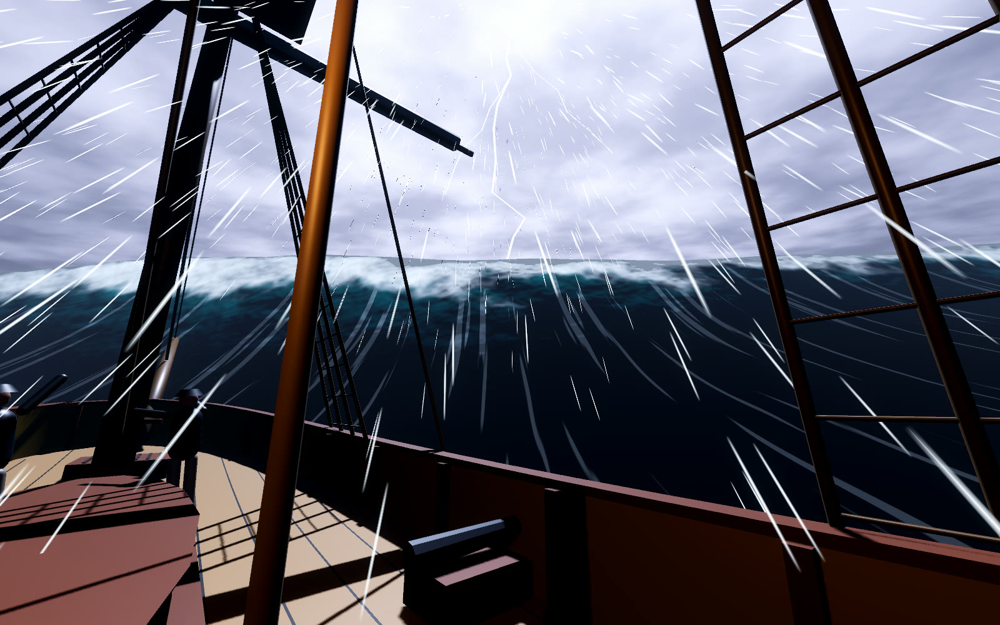
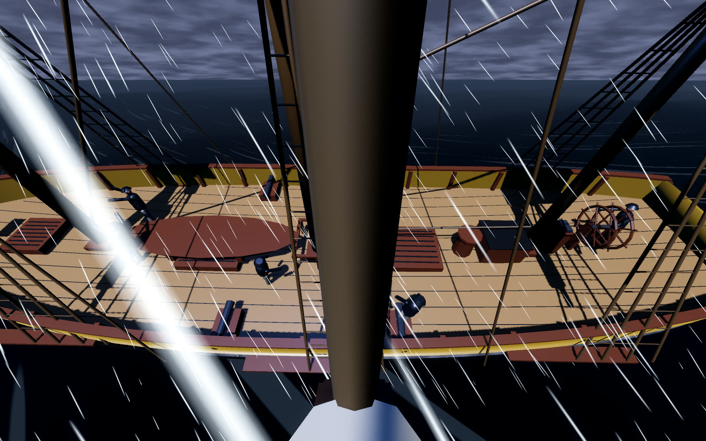
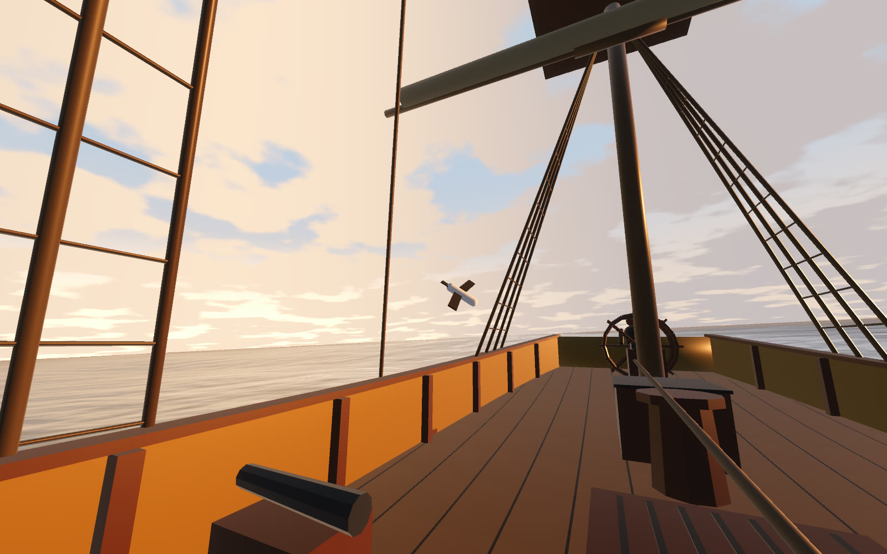

VR Prototype
Greybeard: a storm you stand in

Five minutes on the deck of a ship off Cape Horn in April 1788, in a headset. A wave taller than the masts is coming, and you have two hands.
Sailors called the biggest Southern Ocean waves greybeards. We wanted to know whether VR could make a room full of ordinary people, kids and parents included, feel one arrive, without anyone feeling ill. The answer so far is a five-minute slice built in grey boxes, with the effort spent where the fear is made: the water, the lightning and the sound.
What your hands do
- Take a lashing from the bosun and hold fast while five seas board the ship from the windward side. The third one takes the hen coop.
- Haul a halyard and work the pump between seas.
- Get hoisted up the mast in a bosun's chair, saw through a fouled rope one-handed with a knife, and grab the rigging on the swing back.
- You cannot lose. Someone who lets go of everything and just stares still reaches the dawn.
What VR taught us
- Cap the motion, do not scale it. The deck never moves more than 12 cm or 4 degrees under your feet. Without the cap, the big wave dragged the ropes sixty centimetres out of your hands.
- A wave has to be short and tall to read as a wall. At 185 metres long it looked like a hill. At 120 metres long and nine and a half high, it is a wall.
- A real pendulum on a rolling ship is chaos: in one test run in three the swing never came near the rigging. The first arc is physics; the rest are written by hand.
- The sail has to tear the knife out of your hand, or that hand is never free to catch the rigging.
- One fade in the whole show. Three comfort settings on the operator's keys, from calm to Cape Horn.
Where it is
It has had one short session in a headset, which covered the calm opening at a steady 72 frames a second and produced two notes: the hands pointed the wrong way, and it was a bit colourless. Both are fixed. The storm itself has not been measured in a headset yet, and the ship and crew are still grey boxes.
It is meant for a VR venue, with an operator beside you and an empty floor. If you run one, or have been seasick in one, tell us.
Pictures










Talk about this one
Questions, ideas, “you should try this instead”: the thread for this experiment is open to anyone.
The forum runs on GitHub Discussions. Reading is open to all; posting needs a free GitHub account.
More experiments
 Robots · Tools
Eva and Adam, taken apart
Two humanoid robots live in our workshop. We write the software that makes one of them see, listen and pull faces, and we built a 3D guide that takes both of them apart screw by screw.
In progress
Robots · Tools
Eva and Adam, taken apart
Two humanoid robots live in our workshop. We write the software that makes one of them see, listen and pull faces, and we built a 3D guide that takes both of them apart screw by screw.
In progress
 Art direction
One wheel, four tables
In Souls & Estates one mouse wheel now takes you from a single peasant yard to a table map of central Russia, through four dioramas of the same place.
You can try it
Art direction
One wheel, four tables
In Souls & Estates one mouse wheel now takes you from a single peasant yard to a table map of central Russia, through four dioramas of the same place.
You can try it
 New platform
A game inside a Reddit post
What if you did not have to leave the feed to play? We put Gull Chorus, our seagull flock game, inside a Reddit post: one post is one beach, with a leaderboard under it.
In progress
New platform
A game inside a Reddit post
What if you did not have to leave the feed to play? We put Gull Chorus, our seagull flock game, inside a Reddit post: one post is one beach, with a leaderboard under it.
In progress